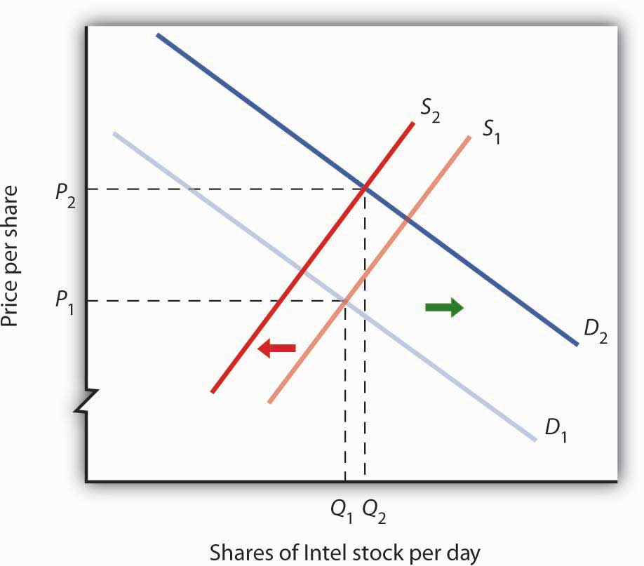
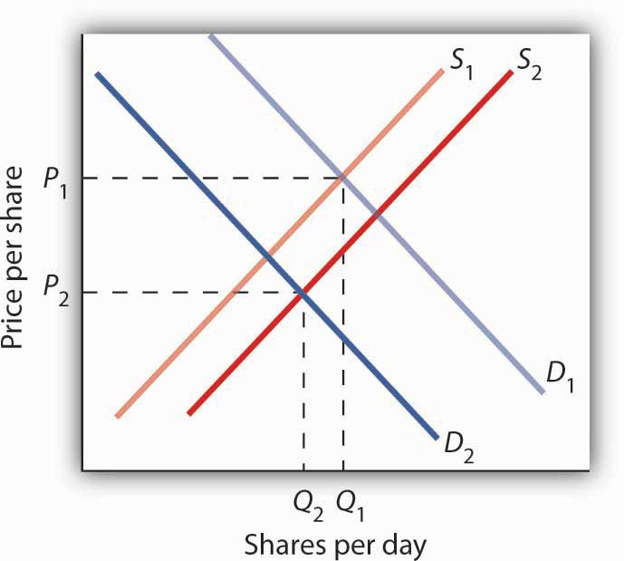

A shift in either demand or supply, or in both, leads to a change in equilibrium price and equilibrium quantity. We begin this chapter by examining markets in which prices adjust quickly to changes in demand or supply: the market for personal computers, the markets for crude oil and gasoline, and the stock market. These markets are thus direct applications of the model of demand and supply.
In the 1960s, to speak of computers was to speak of IBM, the dominant maker of large mainframe computers used by business and government agencies. Then between 1976, when Apple Computer introduced its first desktop computer, and 1981, when IBM produced its first personal computers (PCs), the old world was turned upside down. In 1984, just 8.2% of U.S. households owned a personal computer. By 2007, Google estimates that 78% did. The tools of demand and supply tell the story from an economic perspective.
Technological change has been breathtakingly swift in the computer industry. Because personal computers have changed so dramatically in performance and in the range of the functions they perform, we shall speak of “quality-adjusted” personal computers. The price per unit of quality-adjusted desktop computers fell by about half every 50 months during the period 1976–1989. In the first half of the 1990s, those prices fell by half every 28 months. In the second half of the 1990s, the “halving time” fell to every 24 months.Ilkka Tuomi, “The Lives and Death of Moore’s Law.” http://www.firstmonday.org/issues/issue7_11/tuomi/index. First Monday (http://www.firstmonday.org) is a peer-reviewed journal on the Internet.
Consider another indicator of the phenomenal change in computers. Between 1993 and 1998, the Bureau of Labor Statistics estimates that central processing unit (CPU) speed rose 1,263%, system memory increased 1,500%, hard drive capacity soared by 3,700%, and monitor size went up 13%. It seems safe to say that the dizzying pace of change recorded in the 1990s has increased in this century. A “computer” today is not the same good as a “computer” even five years ago. To make them comparable, we must adjust for these changes in quality.
Initially, most personal computers were manufactured by Apple or Compaq; both companies were very profitable. The potential for profits attracted IBM and other firms to the industry. Unlike large mainframe computers, personal computer clones turned out to be fairly easy things to manufacture. As shown in Table 4.1 "Personal Computer Shipments, Market Percentage Shares by Vendors, World and United States", the top five personal computer manufacturers produced only 48% of the personal computers sold in the world in 2005, and the largest manufacturer, Dell, sold only about 19% of the total in that year. This is a far cry from the more than 90% of the mainframe computer market that IBM once held. The market has become far more competitive.
Table 4.1 Personal Computer Shipments, Market Percentage Shares by Vendors, World and United States
| Company | % of World Shipments | Company | % of U.S. Shipments |
|---|---|---|---|
| Dell | 18.9 | Dell | 34 |
| Hewlett-Packard | 15.4 | Hewlett-Packard | 18.2 |
| IBM | 5.1 | Gateway | 5.7 |
| Fujitsu Seimens | 4.6 | IBM | 4.3 |
| Acer | 4 | Apple | 3.9 |
| Others | 52 | Others | 34 |
| Total | 100.0 | Total | 100.0 |
Source: IDC—Press Release 15 Apr 2005 “PC Market Approaches 11% Growth as International Demand Remains Strong, According to IDC” (http://www.idc.com/getdoc.jsp?containerId=pr2005_04_14_17070722) (Totals may not add due to rounding)
Figure 4.1 "The Personal Computer Market" illustrates the changes that have occurred in the computer market. The horizontal axis shows the quantity of quality-adjusted personal computers. Thus, the quantity axis can be thought of as a unit of computing power. Similarly, the price axis shows the price per unit of computing power. The rapid increase in the number of firms, together with dramatic technological improvements, led to an increase in supply, shifting the supply curve in Figure 4.1 "The Personal Computer Market" to the right from S1 to S2.
Figure 4.1 The Personal Computer Market
The supply curve for quality-adjusted personal computers has shifted markedly to the right, reducing the equilibrium price from P1 to P2 and increasing the equilibrium quantity from Q1 to Q2 in 2005.
Demand also shifted to the right from D1 to D2, as incomes rose and new uses for computers, from e-mail and social networking to Voice over Internet Protocol (VoIP) and Radio Frequency ID (RFID) tags (which allow wireless tracking of commercial shipments via desktop computers), altered the preferences of consumer and business users. Because we observe a fall in equilibrium price and an increase in equilibrium quantity, we conclude that the rightward shift in supply has outweighed the rightward shift in demand. The power of market forces has profoundly affected the way we live and work.
The market for crude oil took a radical turn in 1973. The price per barrel of crude oil quadrupled in 1973 and 1974. Price remained high until the early 1980s but then fell back drastically and remained low for about two decades. In 2004, the price of oil began to move upward and by 2008 had reached $147 per barrel.
What caused the dramatic increase in gasoline and oil prices in 2008? It appeared to be increasing worldwide demand outpacing producers’ ability—or willingness—to increase production much. This increase in demand is illustrated in Figure 4.2 "The Increasing Demand for Crude Oil".
Figure 4.2 The Increasing Demand for Crude Oil
The price of oil was $35 per barrel at the beginning of 2004, as determined by the intersection of world demand, D1, and world supply, S1. Increasing world demand, prompted largely by increasing demand from China as well as from other countries, shifted world demand to D2, pushing the price as high as $140 per barrel by the middle of 2008.
Higher oil prices also increase the cost of producing virtually every good or service, as at a minimum, the production of most goods requires transportation. These costs inevitably translate into higher prices for nearly all goods and services. Supply curves of the goods and services thus affected shift to the left, putting downward pressure on output and upward pressure on prices.
Graphically, the impact of higher gasoline prices on businesses that use gasoline is illustrated in Figure 4.3 "The Impact of Higher Gasoline Prices". Because higher gasoline prices increase the cost of doing business, they shift the supply curves for nearly all businesses to the left, putting upward pressure on prices and downward pressure on output. In the case shown here, the supply curve in a typical industry shifts from S1 to S2. This increases the equilibrium price from P1 to P2 and reduces the equilibrium quantity from Q1 to Q2.
Figure 4.3 The Impact of Higher Gasoline Prices
Higher gasoline prices increase the cost of producing virtually every good or service. In the case shown here, the supply curve in a typical industry shifts from S1 to S2. This increases the equilibrium price from P1 to P2 and reduces equilibrium quantity from Q1 to Q2.
Then, as the world economy slowed dramatically in the second half of 2008, the demand curve for oil shifted back to the left. By November 2008, the price per barrel had dropped back to below $60 per barrel. As gas prices also subsided, so did the threat of higher prices in other industries.
The circular flow model suggests that capital, like other factors of production, is supplied by households to firms. Firms, in turn, pay income to those households for the use of their capital. Generally speaking, however, capital is actually owned by firms themselves. General Motors owns its assembly plants, and Wal-Mart owns its stores; these firms therefore own their capital. But firms, in turn, are owned by people—and those people, of course, live in households. It is through their ownership of firms that households own capital.
A firm may be owned by one individual (a sole proprietorshipA firm owned by one individual.), by several individuals (a partnershipA firm owned by several individuals.), or by shareholders who own stock in the firm (a corporationA firm owned by shareholders who own stock in the firm.). Although most firms in the United States are sole proprietorships or partnerships, the bulk of the nation’s total output (about 90%) is produced by corporations. Corporations also own most of the capital (machines, plants, buildings, and the like).
This section describes how the prices of shares of corporate stockShares in the ownership of a corporation., shares in the ownership of a corporation, are determined by the interaction of demand and supply. Ultimately, the same forces that determine the value of a firm’s stock determine the value of a sole proprietorship or partnership.
When a corporation needs funds to increase its capital or for other reasons, one means at its disposal is to issue new stock in the corporation. (Other means include borrowing funds or using past profits.) Once the new shares have been sold in what is called an initial public offering (IPO), the corporation receives no further funding as shares of its stock are bought and sold on the secondary market. The secondary market is the market for stocks that have been issued in the past, and the daily news reports about stock prices almost always refer to activity in the secondary market. Generally, the corporations whose shares are traded are not involved in these transactions.
The stock marketThe set of institutions in which shares of stock are bought and sold. is the set of institutions in which shares of stock are bought and sold. The New York Stock Exchange (NYSE) is one such institution. There are many others all over the world, such as the DAX in Germany and the Bolsa in Mexico. To buy or sell a share of stock, one places an order with a stockbroker who relays the order to one of the traders at the NYSE or at some other exchange.
The process through which shares of stock are bought and sold can seem chaotic. At many exchanges, traders with orders from customers who want to buy stock shout out the prices those customers are willing to pay. Traders with orders from customers who want to sell shout out offers of prices at which their customers are willing to sell. Some exchanges use electronic trading, but the principle is the same: if the price someone is willing to pay matches the price at which someone else is willing to sell, the trade is made. The most recent price at which a stock has traded is reported almost instantaneously throughout the world.
Figure 4.4 "Demand and Supply in the Stock Market" applies the model of demand and supply to the determination of stock prices. Suppose the demand curve for shares in Intel Corporation is given by D1 and the supply by S1. (Even though the total number of shares outstanding is fixed at any point in time, the supply curve is not vertical. Rather, the supply curve is upward sloping because it represents how many shares current owners are prepared to sell at each price, and that number will be greater at higher prices.) Suppose that these curves intersect at a price of $25, at which Q1 shares are traded each day. If the price were higher, more shares would be offered for sale than would be demanded, and the price would quickly fall. If the price were lower, more shares would be demanded than would be supplied, and the price would quickly rise. In general, we can expect the prices of shares of stock to move quickly to their equilibrium levels.
Figure 4.4 Demand and Supply in the Stock Market
The equilibrium price of stock shares in Intel Corporation is initially $25, determined by the intersection of demand and supply curves D1 and S1, at which Q1 million shares are traded each day.
The intersection of the demand and supply curves for shares of stock in a particular company determines the equilibrium price for a share of stock. But what determines the demand and supply for shares of a company’s stock?
The owner of a share of a company’s stock owns a share of the company, and, hence, a share of its profits; typically, a corporation will retain and reinvest some of its profits to increase its future profitability. The profits kept by a company are called retained earningsProfits kept by a company.. Profits distributed to shareholders are called dividendsProfits distributed to shareholders.. Because a share of stock gives its owner a claim on part of a company’s future profits, it follows that the expected level of future profits plays a role in determining the value of its stock.
Of course, those future profits cannot be known with certainty; investors can only predict what they might be, based on information about future demand for the company’s products, future costs of production, information about the soundness of a company’s management, and so on. Stock prices in the real world thus reflect estimates of a company’s profits projected into the future.
The downward slope of the demand curve suggests that at lower prices for the stock, more people calculate that the firm’s future earnings will justify the stock’s purchase. The upward slope of the supply curve tells us that as the price of the stock rises, more people conclude that the firm’s future earnings do not justify holding the stock and therefore offer to sell it. At the equilibrium price, the number of shares supplied by people who think holding the stock no longer makes sense just balances the number of shares demanded by people who think it does.
What factors, then, cause the demand or supply curves for shares of stocks to shift? The most important factor is a change in the expectations of a company’s future profits. Suppose Intel announces a new generation of computer chips that will lead to faster computers with larger memories. Current owners of Intel stock would adjust upward their estimates of what the value of a share of Intel stock should be. At the old equilibrium price of $25 fewer owners of Intel stock would be willing to sell. Since this would be true at every possible share price, the supply curve for Intel stock would shift to the left, as shown in Figure 4.5 "A Change in Expectations Affects the Price of Corporate Stock". Just as the expectation that a company will be more profitable shifts the supply curve for its stock to the left, that same change in expectations will cause more people to want to purchase the stock, shifting the demand curve to the right. In Figure 4.5 "A Change in Expectations Affects the Price of Corporate Stock", we see the supply curve shifting to the left, from S1 to S2, while the demand curve shifts to the right, from D1 to D2.
Figure 4.5 A Change in Expectations Affects the Price of Corporate Stock
If financial investors decide that a company is likely to be more profitable, then the supply of the stock shifts to the left (in this case, from S1 to S2), and the demand for the stock shifts to the right (in this case, from D1 to D2), resulting in an increase in price from P1 to P2.
Other factors may alter the price of an individual corporation’s share of stock or the level of stock prices in general. For example, demographic change and rising incomes have affected the demand for stocks in recent years. For example, with a large proportion of the U.S. population nearing retirement age and beginning to think about and plan for their lives during retirement, the demand for stocks has risen.
Information on the economy as a whole is also likely to affect stock prices. If the economy overall is doing well and people expect that to continue, they may become more optimistic about how profitable companies will be in general, and thus the prices of stocks will rise. Conversely, expectations of a sluggish economy, as happened in the fall of 2008, could cause stock prices in general to fall.
The stock market is bombarded with new information every minute of every day. Firms announce their profits of the previous quarter. They announce that they plan to move into a new product line or sell their goods in another country. We learn that the price of Company A’s good, which is a substitute for one sold by Company B, has risen. We learn that countries sign trade agreements, launch wars, or make peace. All of this information may affect stock prices because any information can affect how buyers and sellers value companies.
Suppose an airline announces that its earnings this year are lower than expected due to reduced ticket sales. The airline spokesperson gives no information on how the company plans to turn things around. Use the model of demand and supply to show and explain what is likely to happen to the price of the airline’s stock.
The hijacking of four airplanes and the steering of them into buildings is perhaps the only disaster that has become universally known by its date: September 11, 2001—hence, 9/11. “9/11” will remain etched in our collective memory for a great many generations.
Disasters such as 9/11 represent the kind of complete surprises that dramatically affect stock prices, if only temporarily. The New York Stock Exchange was closed on the day of the attack and remained closed for six days. On the day the market opened, the Dow Jones Industrial Average (the “DOW”, a widely used gauge of stock prices) fell nearly 685 points to 8,920. It was one of the biggest one-day decline in U.S. history.
Why did the attacks on September 11, 2001, have such a dramatic short-term impact on the stock market? The attacks of 9/11 plunged the United States and much of the rest of the world into a very frightening war against terrorism. The realization that terrorists could strike anytime and in any place sapped consumer and business confidence alike and affected both the demand and supply of most stocks. The attacks on 9/11 provoked fear and uncertainty—two things that are certain to bring stock prices down, at least until other events and more information cause expectations to change again in this very responsive market.
The information given in the problem suggests that the airline’s profits are likely to fall below expectations. Current owners of the airline’s stock and potential buyers of the stock would adjust downward their estimates of what the value of the corporation’s stock should be. As a result the supply curve for the stock would increase, shifting it to the right, while the demand curve for the stock would decrease, shifting it to the left. As a result, equilibrium price of the stock falls from P1 to P2. What happens to equilibrium quantity depends on the extent to which each curve shifts. In the diagram, equilibrium quantity is shown to decrease from Q1 to Q2.
Figure 4.7
